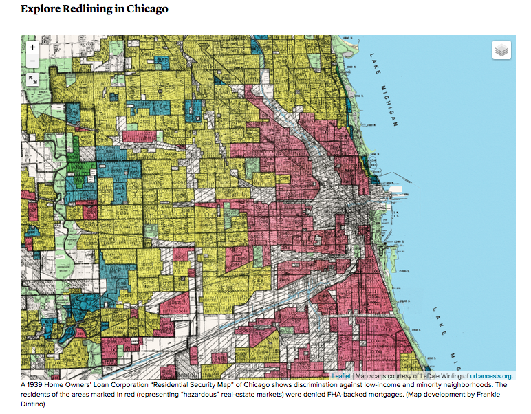
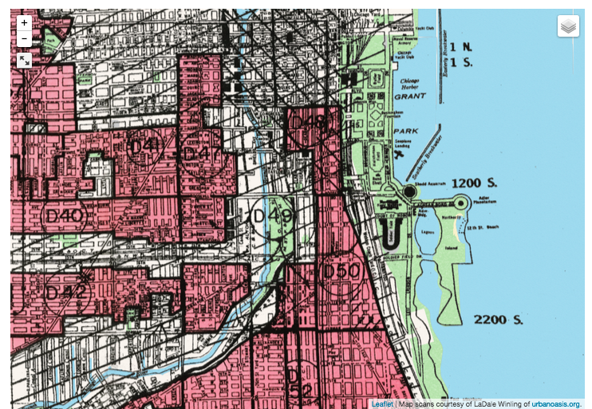

GIS MAPS ON THE WEB
Exploring the Maps Behind The Case for Reparations
Te-Nehisi Coates groundbreaking article for The Atlantic brought a much needed conversation to the mainstream media. This blog post explores one of the maps behind the article.
September 17, 2015
In the article, The Case for Reparations, Te-Nehisi Coates illustrates the narrative of how black families in the United States have faced systematic oppressions by the government and private businesses alike. He explains this in in two ways: by the personal stories of families deeply impacted by policies such as redlining, and through maps. One of the first maps shown in the article displays how banks redlined Chicago neighborhoods. The original map was drawn by the Home Owners' Loan Corporation (HOLC).
According to the article, "Neighborhoods where black people lived were rated “D” and were usually considered ineligible for FHA backing. They were colored in red. Neither the percentage of black people living there nor their social class mattered. Black people were viewed as a contagion. Redlining went beyond FHA-backed loans and spread to the entire mortgage industry, which was already rife with racism, excluding black people from most legitimate means of obtaining a mortgage."
The HOLC created the map in 1939 for the explicit purpose of identifying neighborhoods with immigrants and people of color, particularly Black people. It was crudely named "Residential Security Map."
The HOLC was originally founded as part of the New Deal's Home Owners' Loan Act of 1933. According to records of the HOLC from 1933 to 1951 , the HOLC's purpose was to provide "low interest long-term mortgage loans to homeowners unable to procure financing through normal channels." Ironically, the HOLC consistenly ranked Black neighborhoods as "poor investment risks". This information was routinely used by lenders and realtors to deny Blacks mortgages or to lend them the money at impossibly high interest rates.
Developing the Map
The map is an interactive web map oringinated from Urban Oasis's archival resources as part of the Mapping Inequality Project, a multi-institutional research collaboration on the impact and legacy of New Deal “redlining” in American cities. The web map was developed using Leaflet.Js.
According to the Urban Oasis website, "Participants from Johns Hopkins University, the University of Maryland, and the University of Richmond are building a public-oriented digital archive of federal resources, including maps, demographic data, and contemporary realtor evaluations. We are creating a large dataset of information on more than 200 U.S. cities in the 1930s to help understand the functioning of federal programs both at the local level and in aggregate. Finally, the dataset will enable us to assess, combined with subsequent census data, the ultimate fate of a redlined community—what did it mean for an individual neighborhood to be redlined and what did it mean for all redlined neighborhoods. Only big data can answer the general question in combination with the specific question. This effort holds the promise, as a digital project in particular, to make scholarly interpretation of urban and policy history accessible to the public."
Coates used the map as a powerful and clear example of how the federal government enabled the systematic exclusion of Blacks from the same economic opportunity the Home Owners' Loan Corporation was created to help provide.